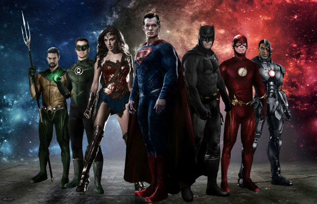
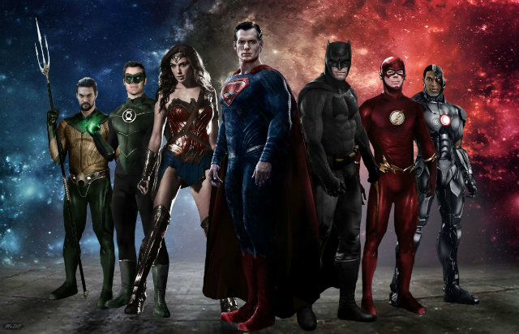

[Review] Justice League: Phim Mới, Tranh Cãi Mới
Jusitce League lại một lần nữa gây ra tranh cãi. Dù điểm số trên các trang phê bình hết sức tệ hại nhưng bộ phim mới này chắc chắn là một bước tiến lớn của DCEU. Và vẫn như mọi khi, các fan DC Comic vẫn luôn ủng hộ các siêu anh hùng nhà mình hết lòng. Siêu nhân quan trọng như thế nào? Câu trả lời được thể hiện rõ ràng ở đoạn mở đầu Justice League. Người Krypton ấy ra đi, hy vọng cũng mất. Khi bản nhạc Everybody Knows vang lên, dù những ai không hâm mộ Superman cũng sẽ rưng rưng nước mắt. Người hùng ngoại lai từng được cả thế giới tôn vinh cũng từng bị nhân loại nguyền rủa. Khi anh nằm dưới lòng đất lạnh, loài người chao đảo và chìm trong nỗi sợ hãi khôn cùng. Chính vào lúc này, thế lực độc ác bị lưu đày từ cổ xưa bỗng quay trở lại. Thế giới nhớ Superman nhiều thế nào, Batman nhớ nhiều thế ấy. Và hơn ai hết, anh hối hận sâu sắc. Người Dơi thành phố Gotham biết anh đã phạm sai lầm nghiêm trọng và ngày ngày ăn năn. Khi nhận ra thế giới lâm nguy, Batman liên kết với Wonder Woman, tập hợp những siêu anh hùng để bảo vệ thế giới. Không còn là người hùng đơn độc, anh trở thành thủ lĩnh Liên Minh Công Lý. Có lẽ, Justice League vẫn gặp vấn đề như đa số các phim gần đây của DC Comic & Warner Bros. nhưng chắc chắn trăm ngàn ngàn sai cũng không phải các diễn viên sai. Họ đều thể hiện từ tròn vai đến xuất sắc. Đúng như lời nhận xét từ buổi chiếu thử đầu tiên, Ezra Miller là điểm sáng nhất phim. Với lối diễn hài hết sức duyên dáng, The Flash khiến tất cả mọi người phải phì cười từng phân cảnh mình xuất hiện. Và cũng như QuickSilver nhà X-Men, chàng trai tốc độ này cũng chiếm hết spotlight mỗi khi sử dụng kỹ năng. Aquaman sắp làm phim riêng, bao giờ sẽ tới Barry Allen quá đỗi tuyệt vời này? Sở hữu kinh nghiệm diễn xuất kỳ cựu nhất nhóm siêu anh hùng, Ben Affleck thể hiện tốt Bruce Wayne nhiều tâm sự ở phần phim mới. Anh hiền lành, mềm mỏng và tinh tế. Tình cảm Batman dành cho Superman trở nên ngọt ngào hơn rất nhiều, chắc chắn sẽ khiến các fan cặp đôi này vừa xem vừa phấn khích trong rạp chiếu phim. Ngoài ra, nếu xem kỹ các phần trước, nhiều chi tiết sẽ làm bạn thấy thú vị ở các đoạn thoại của Batman. Anh đã thay đổi từ kẻ hơi cộc cằn, trốn tránh cả thế giới thành một người “có tính người” hơn. Sự cố chấp hồi Batman v Superman: Dawn Of Justice đều được sửa đổi. Batman vẫn là gã tỷ phú Bruce Wayne sẵn sàng chi tiền không đắn đo cho những gì anh muốn nhưng sâu trong anh, đã có thứ đổi thay. Đây sẽ là thay đổi quan trọng trước khi phim riêng The Batman ra mắt vào Điểm trừ đáng tiếc là thân hình Ben Affleck lại không hợp với bộ quần áo Người Dơi. Wonder Woman vẫn lộng lẫy và duyên dáng như mọi lần. Từ BvS đến phim riêng và giờ là Justice League, Diana Prince chưa bao giờ khiến các fan mảy may thất vọng. Vì là bộ phim về tập hợp các siêu anh hùng nên Gal Gadot không có nhiều đất diễn để phô diễn nội tâm đầy phức tạp của nữ chiến binh nhưng bộ phim vẫn quá đủ để chị đại giữ vững ngôi vị nữ hoàng trong lòng các fan DC Comic. Các nhà làm phim vẫn dành cho nàng những câu thoại vừa ngọt vừa bi về chàng trai phàm tục nàng yêu. Steve Trevor được nhắc tới ít nhất ba lần. Nếu DCEU muốn ghép cặp Batman và Wonder Woman thì đó vẫn còn là tương lai rất xa. Henry Cavill đẹp như một vị thần với hình ảnh Superman. Dù không xuất hiện nhiều nhưng đây thật sự là màn diễn chói sáng sau khi cả Clark Kent và Siêu nhân đều có phần mệt mỏi ở BvS. Jason Momoa và Ray Fisher lần đầu xuất hiện trong hình ảnh Arthur Curry và Victor Stone. Chưa thể đánh giá rõ ràng về họ nhưng cả hai đều gây ấn tượng tốt. Khác với Aquaman sắp lên màn ảnh rộng được cầm trịch bởi đạo diễn lừng danh James Wan, màn ra mắt thành công sẽ là yếu tố quan trọng quyết định tương lai Cyborg sau này. Nàng Lois Lane có vai trò khá mờ nhạt nhưng gương mặt xinh đẹp của Amy Adams vẫn khiến khán giả không thể rời mắt. Nội dung Justice League gãy gọn, tập trung vào cốt truyện chính chứ không lan man. Phim khắc phục tốt lỗi dài dòng và giới thiệu quá nhiều từng mắc phải ở BvS và Suicide Squad. Dù Zack Snyder không thể theo tới cuối cùng nhưng tư tưởng của ông vẫn mang tính chủ đạo cho phim. Các fan dễ dàng nhận thấy những pha đánh nhau cực đỉnh, những màn slow motion đặc trưng và những trường đoạn bi thương đến nghẹt thở quen thuộc đúng chất Zack. Tuy nhiên, được điều này thì lại mất điều kia, bộ phim vẫn còn khá nhiều sai sót. Với sự tham gia của Joss Whedon – người cũ nhà Marvel trong phần kịch bản, Justice League đã bớt phần u ám và thêm nhiều trường đoạn hài hước. Thế nhưng, các fan cứng DC comic có lẽ sẽ thấy nhớ tới một kịch bản nhiều tầng nghĩa và trứng Phục Sinh đúng chất Zack Snyder hơn là những câu đùa cố ép mình theo phong cách Marvel. Phản diện lần này cũng mắc lỗi chẳng khác gì kẻ thù truyền kiếp - đầu voi đuôi chuột. Điểm trừ nữa là nhân vật Stepphenwolf hoàn toàn CGI cũng xấu chẳng kém thần chiến tranh Ares trong Wonder Woman. Đây là điều khó hiểu khi theo các rumour, kinh phí đầu tư Justice League lên đến 300 triệu $. Lần đầu ra mắt không thành công như mong đợi, dường như phong cách hiện giờ của Joss Whedon không hợp với việc tiếp nối Zack Snyder cũng như vũ trụ siêu anh hùng DC. Phần nhạc phim là sự thụt lùi đáng tiếc nếu so sánh các phim trước trong DCEU. Nếu như OST BvS được đánh giá là hay nhất từ trước đến nay do Junkie XL và Hans Zimmer đồng chế tác, Suicide Squad khiến cả thế giới quay cuồng cùng những bài nhạc đỉnh như Sucker For Pain thì dường như chỉ có bản nhạc Everybody Knows đoạn đầu Justice League là xuất sắc. Nếu phải chọn ra điểm tệ nhất trong bộ phim hay này thì chính là khâu dựng phim. Một Wonder Woman chẳng ai quan tâm ngoài các fan DC bỗng trở thành nữ thần Rotten Tomatoes dường như chưa đủ để các đầu não Warner Bros thay đổi cung cách cắt phpim vô tội vạ. Justice League bị vụn và ngắt mạch cảm xúc quá nhiều. Hình như hãng vẫn chưa nhận ra, không phải bộ phim nào cũng làm được như Blade Runner 1982 - bản phim chiếu rạp bị ghẻ lạnh và bản full không cắt được tôn vinh trở thành tác phẩm điện ảnh vĩ đại. Dẫu sao, Justice League vẫn đủ làm các fan hài lòng. Doanh thu khổng lồ nằm trong tầm tay cũng khép lại một năm thành công của vũ trụ DCEU. Hy vọng WB và DC Comic sẽ chịu khó lắng nghe ý kiến từ khán giả và giới phê bình để các tác phẩm sau ngày càng tốt hơn. Cuối cùng, hãy ngồi lại đến phút chót bởi Justice League có hai after credit rất quan trọng mở ra tương lai DCEU. 
